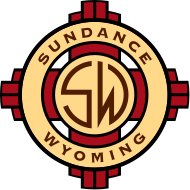

Overview
Site Name
The name of the website will be "Sundance Chamber of Commerce".
The proposed domain (and subsequent website address) might be sundance-chamber.com.
Site Purpose
The purpose of this site will be to present information, opportunities, and resources to businesses operating within the greater Sundance community, as well as individuals and organizations seeking to create or relocate a business in the area. The website will play a vital role in networking like-minded business leaders and assist in achieving economic growth to sustain the community.
The website will be a place to announce business-to-business networking events and other community events. It will have links to a variety of economic and business-related resources, including state and federal resources such as the Small Business Administration (SBA). It will provide a place for members of the Chamber to access member-related content and resources. Finally, the website will provide contact information for Chamber leadership, as well as a contact form for anyone to request a variety of information.
Site Logo
